A guided tour of janos
Pablo Almaraz, RElab
2026-05-23
Source:vignettes/introduction.Rmd
introduction.RmdAbstract
janos is a unified R framework for specifying, simulating, and
analysing dynamical systems. A single system_spec() object
encodes the governing equations; a single dyn_sim() entry
point integrates them through a family-aware solver stack; and a
family-aware analysis layer computes qualitative portraits, continuation
diagrams, Fokker-Planck densities, quasi-stationary distributions,
Lyapunov spectra and constructive Lyapunov certificates, rare-event
probabilities, and adjoint-based sensitivities. Under the hood, every
model expressed as formulas is lowered to C++ through Rcpp and cached
across sessions, so compiled performance is available without leaving R.
This vignette is the entry point to the janos workflow. It establishes
the taxonomy of systems the package recognises, provides a decision tree
that maps a user question onto the matching system_spec()
slot and the available analysis functions, demonstrates the uniform API
by rendering the same biological problem as an ODE, a continuous-time
Markov chain and a chemical Langevin equation, walks four contrasting
canonical systems on one decision branch each, and closes with a case
study on a stochastic metapopulation with an Allee effect that exercises
the full stack end-to-end and contrasts the deterministic and stochastic
extinction boundaries with a measurable prediction.
1. Eight families under one specification
Dynamical systems differ along five mathematical axes: time
continuity (continuous or discrete), determinism (deterministic or
stochastic), memory (memoryless or delayed), regularity (smooth or
switched), and spatial coupling (well-mixed or distributed). janos
recognises eight families that partition this space. Ordinary
differential equations (ODEs) are continuous, deterministic, memoryless,
smooth and well-mixed; their janos signature is a rhs slot
in system_spec(). Discrete maps share determinism but
replace continuous time by integer iteration and use the
map slot. Delay differential equations (DDEs) introduce
finite history through the delays slot. Stochastic
differential equations (SDEs) add a Brownian or more general noise
channel through diffusion and an optional
noise specification. Continuous-time Markov chains (CTMCs)
describe integer populations under mass-action kinetics through
stoichiometry and propensities.
Jump-diffusions superimpose a Poisson jump process onto a diffusion via
jumps. Piecewise deterministic Markov processes (PDMPs)
alternate between smooth flow and Markovian switching via
regimes and transitions. Partial differential
equations (PDEs) discretise a spatial dimension through pde
and spatial, and the reaction-diffusion master equation
(RDME) extends the CTMC layer to graphs of voxels through
spatial = list(adjacency = ...). All eight families share
one constructor, one simulation entry point and one analysis
vocabulary.
2. Decision tree
The following tree walks from the single question what kind of
state does the system have down to the system_spec()
slot that selects each family and to the solver and analysis entry
points that apply. Diamonds are decision nodes; coloured rectangles are
model families; the compact second line inside each leaf lists the
primary analysis functions the family supports.
3. One specification, three families
The same biological problem can be expressed in three distinct
mathematical regimes within janos with no change to the constructor
interface. Consider a two-species Lotka-Volterra predator-prey system
with prey \(x\) and predator \(y\), interaction rate \(\beta\) and predator efficiency \(\delta\). As a deterministic ODE the system
is written through the rhs slot; as a CTMC with
integer-valued populations it is written through
stoichiometry and propensities, with
propensities computed under a system size \(\Omega\); as a chemical Langevin equation
it couples the continuous drift to a square-root diffusion through both
rhs and diffusion slots. The three definitions
share the same state names, the same initial condition up to integer
rounding and the same parameter names. Different solver_*()
constructors dispatch to the correct family.
lv_ode <- system_spec(
rhs = list(
x ~ alpha * x - beta * x * y,
y ~ delta * x * y - gamma * y
),
state_names = c("x", "y"),
parms = list(alpha = 1.0, beta = 0.1, delta = 0.075, gamma = 1.5),
init = c(x = 40, y = 9)
)
run_ode <- dyn_sim(lv_ode, t_max = 50, solver = solver_rk45(),
discard_transient = 0, verbose = FALSE)
plot(run_ode, title = "Lotka-Volterra as an ODE")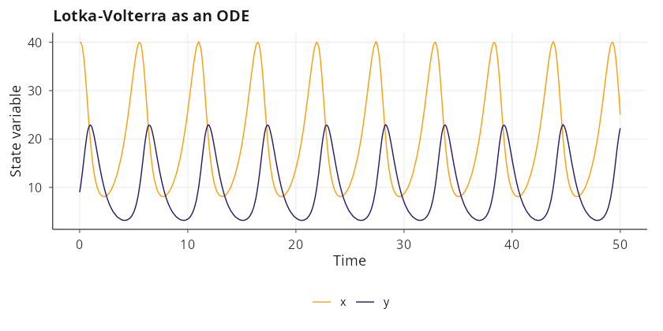
Omega <- 30
lv_ctmc <- system_spec(
stoichiometry = list(
birth_x = c(x = 1L, y = 0L),
pred = c(x = -1L, y = 1L),
death_y = c(x = 0L, y = -1L)
),
propensities = list(
birth_x ~ alpha * x,
pred ~ beta * x * y / Omega,
death_y ~ gamma * y
),
state_names = c("x", "y"),
parms = list(alpha = 1.0, beta = 0.1, gamma = 1.5, Omega = Omega),
init = c(x = 40L * Omega, y = 9L * Omega)
)
run_ctmc <- dyn_sim(lv_ctmc, t_max = 50,
solver = solver_ssa_direct(output_dt = 0.1),
discard_transient = 0, verbose = FALSE)
plot(run_ctmc, title = "Lotka-Volterra as a CTMC (Gillespie)")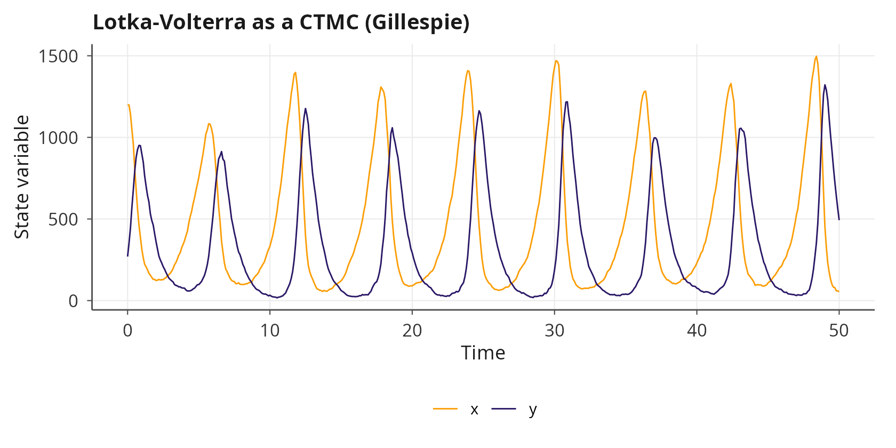
lv_cle <- system_spec(
rhs = list(
x ~ alpha * x - beta * x * y,
y ~ delta * x * y - gamma * y
),
diffusion = list(
x ~ sqrt(alpha * x + beta * x * y) / sqrt(Omega),
y ~ sqrt(delta * x * y + gamma * y) / sqrt(Omega)
),
state_names = c("x", "y"),
parms = list(alpha = 1.0, beta = 0.1, delta = 0.075, gamma = 1.5,
Omega = Omega),
init = c(x = 40, y = 9),
positive_states = TRUE
)
run_cle <- dyn_sim(lv_cle, t_max = 50,
solver = solver_euler_maruyama(dt = 0.01),
discard_transient = 0, verbose = FALSE)
plot(run_cle, title = "Lotka-Volterra as a chemical Langevin equation")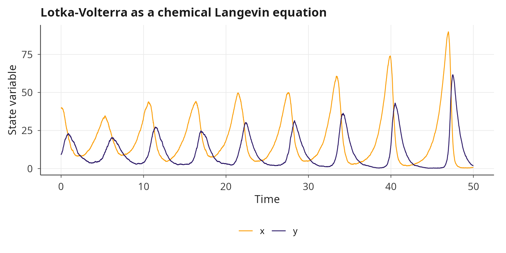
The ODE, CTMC and CLE share the same qualitative geometry; the statistical fluctuations around the deterministic orbit scale as \(1/\sqrt{\Omega}\).
4. A contrasting gallery
The following four examples illustrate one decision-tree branch each. None of the systems is used elsewhere in the janos vignettes or in the README, so a reader who has not yet explored the package encounters four canonical problems and four distinct analysis paths in one reading.
4.1 Selkov glycolytic oscillator: continuation and Hopf onset
The Selkov model [1] is a minimal two-variable
ODE for glycolytic oscillations, \(\dot{x} =
-x + a\,y + x^2\,y\) and \(\dot{y} = b
- a\,y - x^2\,y\), where \(x\)
and \(y\) represent dimensionless
adenosine-diphosphate and fructose-6-phosphate concentrations. For fixed
\(b\) the system undergoes a
supercritical Hopf bifurcation as \(a\)
crosses a critical value that depends on \(b\); continuation() traces the
equilibrium branch in \(a\) and detects
the Hopf crossing automatically, while phase_portrait()
shows the focus becoming a limit cycle.
selkov <- system_spec(
rhs = list(
x ~ -x + a * y + x^2 * y,
y ~ b - a * y - x^2 * y
),
state_names = c("x", "y"),
parms = list(a = 0.1, b = 0.5),
init = c(x = 0.5, y = 0.5)
)
pp_selkov <- phase_portrait(selkov,
xlim = c(0, 2.0), ylim = c(0, 3.5),
trajectories = TRUE, manifolds = TRUE)
cont_selkov <- continuation(selkov, par_name = "a",
par_range = c(0.02, 0.35), verbose = FALSE)
plot(pp_selkov, title = "Selkov phase portrait at a = 0.1, b = 0.5") /
plot(cont_selkov, title = "Continuation in a with Hopf crossing")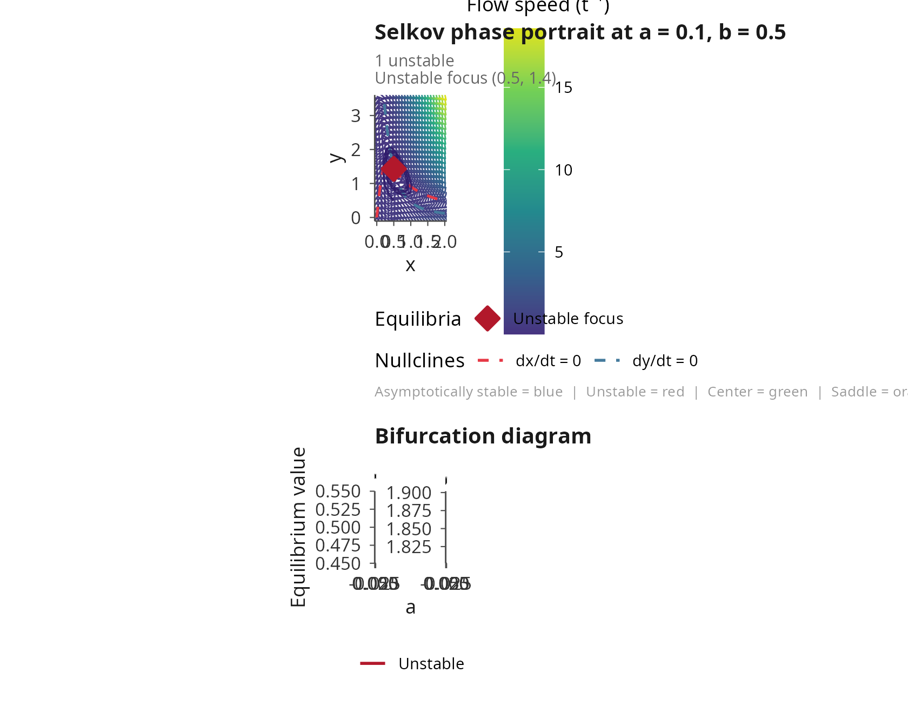
4.2 Stochastic double-well: Fokker-Planck density and Kramers rate
The prototypical one-dimensional bistable drift \(\dot{x} = x - x^3\) has two symmetric
minima at \(x = \pm 1\) separated by a
barrier at the origin. Under additive white noise of intensity \(\sigma\) the stationary density is the
Gibbs measure \(\exp(-2\,V(x)/\sigma^2)\) with \(V(x) = -x^2/2 + x^4/4\), and the mean
first-passage time between wells follows Kramers’ law [2]. The fp_potential() function
reconstructs \(V(x)\) from the drift,
fp_stationary() integrates the steady 1D Fokker-Planck
equation [3] and fp_kramers_rate()
applies the Kramers-Eyring-Polanyi formula.
dw <- system_spec(
rhs = list(x ~ x - x^3),
diffusion = list(x ~ 0.35),
state_names = "x",
parms = list(),
init = c(x = -1.0)
)
dw_run <- dyn_sim(dw, t_max = 400,
solver = solver_euler_maruyama(dt = 0.01),
discard_transient = 50, verbose = FALSE)
V <- fp_potential (dw, xlim = c(-2.2, 2.2))
rho <- fp_stationary (dw, xlim = c(-2.2, 2.2), epsilon = 0.35^2)
kra <- fp_kramers_rate(dw, xlim = c(-2.2, 2.2), epsilon = 0.35^2)
(plot(V, title = "Potential V(x)") |
plot(rho, title = "Stationary FP density")) /
(plot(dw_run, title = "Sample path (inter-well hopping)") |
plot(kra, title = "Kramers escape rate"))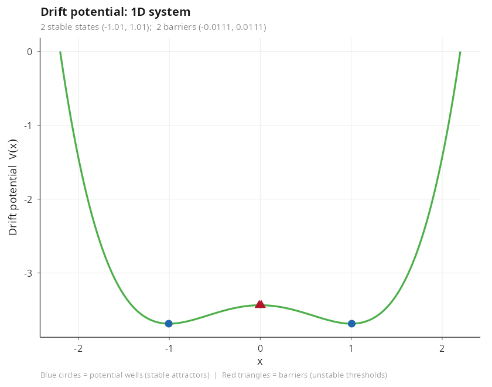
4.3 Nicholson blowflies DDE: delay-induced oscillations
The Nicholson blowflies equation [4] models an
insect population under adult-density-dependent mortality and
reproduction that depends on the density \(\tau\) time units earlier: \(\dot{N} = P\,N(t - \tau)\,\exp(-N(t - \tau)/N_0) -
\delta\,N\). The delay generates sustained oscillations whose
period scales with \(\tau\); for
sufficiently large \(\tau\) the
attractor becomes aperiodic. spectral_analysis() extracts
the fundamental frequency; a manual sweep of dyn_sim() over
\(\tau\) traces the attractor extrema
through the onset of oscillation, since
bifurcation_diagram() is restricted to ODE and map
families.
nicholson <- system_spec(
rhs = list(N ~ P * N_tau * exp(-N_tau / N0) - delta * N),
delays = list(N_tau = list(state = "N", tau = 15.0)),
state_names = "N",
parms = list(P = 8, N0 = 1.0, delta = 0.175),
init = c(N = 3.0),
positive_states = TRUE
)
nich_run <- dyn_sim(nicholson, t_max = 300,
solver = solver_dde(dt = 0.1),
discard_transient = 100, verbose = FALSE)
spec_nich <- spectral_analysis(nich_run)
tau_grid <- seq(4, 22, length.out = 14)
tau_sweep <- vapply(tau_grid, function(tv) {
m <- nicholson
m$delays$N_tau$tau <- tv
r <- dyn_sim(m, t_max = 300, solver = solver_dde(dt = 0.1),
discard_transient = 150, verbose = FALSE)
range(r$attractor$N)
}, numeric(2))
df_tau <- data.frame(
tau = rep(tau_grid, each = 2L),
N = as.numeric(tau_sweep),
kind = rep(c("min", "max"), length(tau_grid))
)
p_tau <- ggplot(df_tau, aes(x = tau, y = N, colour = kind)) +
geom_line(linewidth = 0.8) +
scale_colour_manual(values = c(min = "#E66101", max = "#5E3C99")) +
labs(title = "Attractor extrema across the delay tau",
x = "delay tau", y = "range of N on the attractor") +
theme_minimal() +
theme(legend.position = "none")
plot(nich_run, title = "Nicholson attractor at tau = 15") /
plot(spec_nich, title = "Welch periodogram") /
p_tau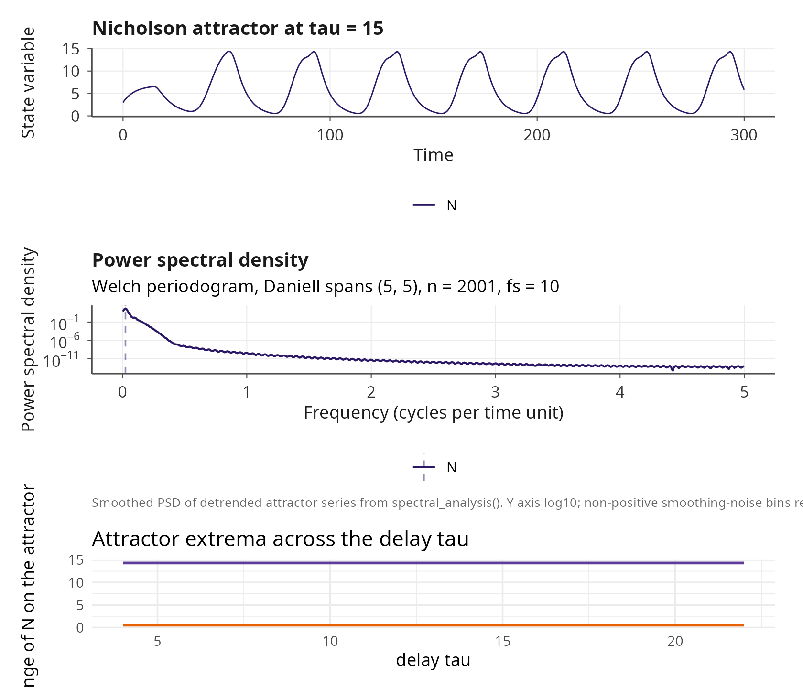
4.4 Newell-Whitehead-Segel amplitude equation: pattern onset
The amplitude equation \(u_t = r\,u +
\partial_x^2 u - u^3\) [5][6] describes the envelope of a weakly nonlinear
pattern near threshold. On a bounded interval with Dirichlet boundary
conditions the trivial state \(u \equiv
0\) is stable below the threshold \(r_c
= (\pi/L)^2\) and loses stability through a pitchfork bifurcation
toward a smooth stationary profile. The corresponding janos
specification uses only the second spatial derivative operator
d2x, and simulating two runs below and above \(r_c\) visualises the bifurcation
directly.
L <- 8
nws_sub <- system_spec(
pde = list(u ~ r * u + d2x(u) - u^3),
state_names = "u",
parms = list(r = 0.1),
spatial = list(
domain = c(0, L), n_grid = 81L,
bc = list(u = list(type = "dirichlet", left = 0, right = 0))
),
init = function(x) 0.05 * sin(pi * x / L)
)
nws_super <- system_spec(
pde = list(u ~ r * u + d2x(u) - u^3),
state_names = "u",
parms = list(r = 0.6),
spatial = list(
domain = c(0, L), n_grid = 81L,
bc = list(u = list(type = "dirichlet", left = 0, right = 0))
),
init = function(x) 0.05 * sin(pi * x / L)
)
run_sub <- dyn_sim(nws_sub, t_max = 50,
solver = solver_mol(dt = 0.001, subsample = 100L),
discard_transient = 0, verbose = FALSE)
run_super <- dyn_sim(nws_super, t_max = 50,
solver = solver_mol(dt = 0.001, subsample = 100L),
discard_transient = 0, verbose = FALSE)
plot(run_sub, type = "snapshot",
title = "r = 0.1, subcritical") |
plot(run_super, type = "snapshot",
title = "r = 0.6, supercritical")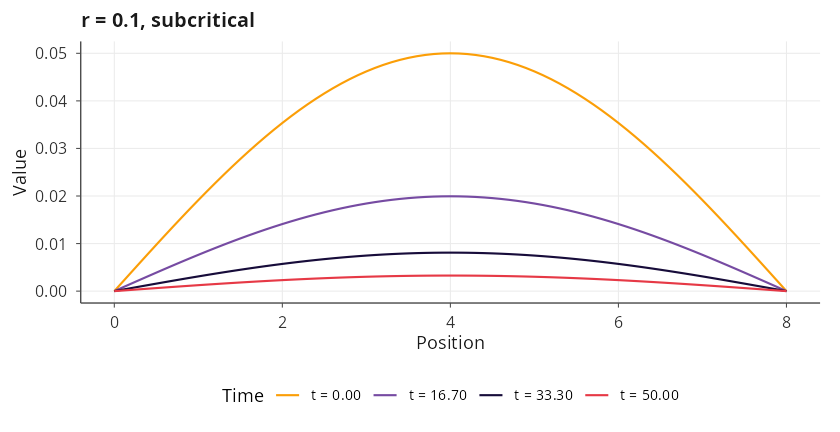
5. Case study: metapopulation with an Allee effect on a heterogeneous lattice
The final case study exercises several janos subsystems in a single narrative. A population with a strong Allee effect [7] occupies a four-by-four lattice of patches connected by nearest-neighbour dispersal. Within each patch individuals are born and die through density-dependent processes, and between adjacent patches they hop as a first-order diffusion reaction. Writing \(b(N) = b_0\,N^2 / (A + N)\) and \(d(N) = d_0\,N + \beta\,N^2\), the well-mixed mean field \(\dot{N} = b(N) - d(N)\) admits three non-negative equilibria: extinction at zero, an unstable Allee threshold and a stable carrying capacity. Below the threshold the population collapses; above it, it saturates. The scientific question is how demographic stochasticity shifts this deterministic picture when a small network of patches is coupled by dispersal.
5.1 Well-mixed mean field and continuation
allee_mf <- system_spec(
rhs = list(N ~ b0 * N^2 / (A + N) - d0 * N - beta * N^2),
state_names = "N",
parms = list(b0 = 1.0, d0 = 0.1, A = 10.0, beta = 0.005),
init = c(N = 5.0),
positive_states = TRUE
)
rhs_grid <- seq(0, 200, length.out = 400)
parms_mf <- allee_mf$parms
rhs_vals <- with(parms_mf,
b0 * rhs_grid^2 / (A + rhs_grid) -
d0 * rhs_grid - beta * rhs_grid^2)
p_rhs <- ggplot(data.frame(N = rhs_grid, dNdt = rhs_vals),
aes(x = N, y = dNdt)) +
geom_hline(yintercept = 0, linetype = 2, colour = "grey40") +
geom_line(colour = "#2C7FB8", linewidth = 0.8) +
labs(title = "dN/dt: extinction, Allee threshold, carrying capacity",
x = "N", y = "dN/dt") +
theme_minimal()
cont_mf <- continuation(allee_mf, par_name = "A",
par_range = c(1, 30), verbose = FALSE)
p_rhs | plot(cont_mf, title = "Continuation over the Allee threshold A")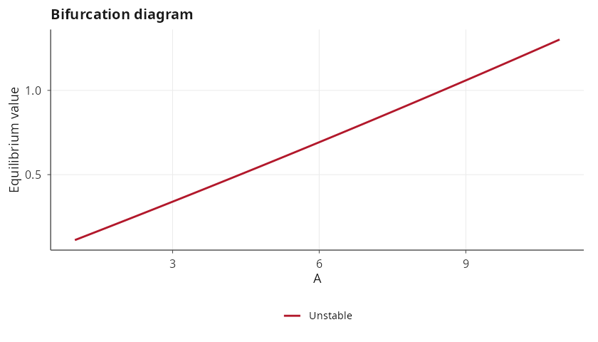
5.2 Stochastic lattice: RDME realisation
lat <- lattice_graph(4, 4, bc = "none")
allee_rdme <- system_spec(
stoichiometry = list(birth = c(N = 1L),
death = c(N = -1L)),
propensities = list(birth ~ b0 * N^2 / (A + N),
death ~ d0 * N + beta * N^2),
state_names = "N",
parms = list(b0 = 1.0, d0 = 0.1, A = 10.0, beta = 0.005, D_N = 0.05),
init = function(node) {
c(N = if (node %in% c(1L, 6L, 11L, 16L)) 60L else 15L)
},
spatial = list(diffusion_rates = list(N ~ D_N), adjacency = lat)
)
rdme_run <- dyn_sim(allee_rdme, t_max = 100,
solver = solver_rdme(output_dt = 0.5, seed = 7),
discard_transient = 0, verbose = FALSE)
plot(rdme_run, title = "RDME realisation on the 4 x 4 lattice")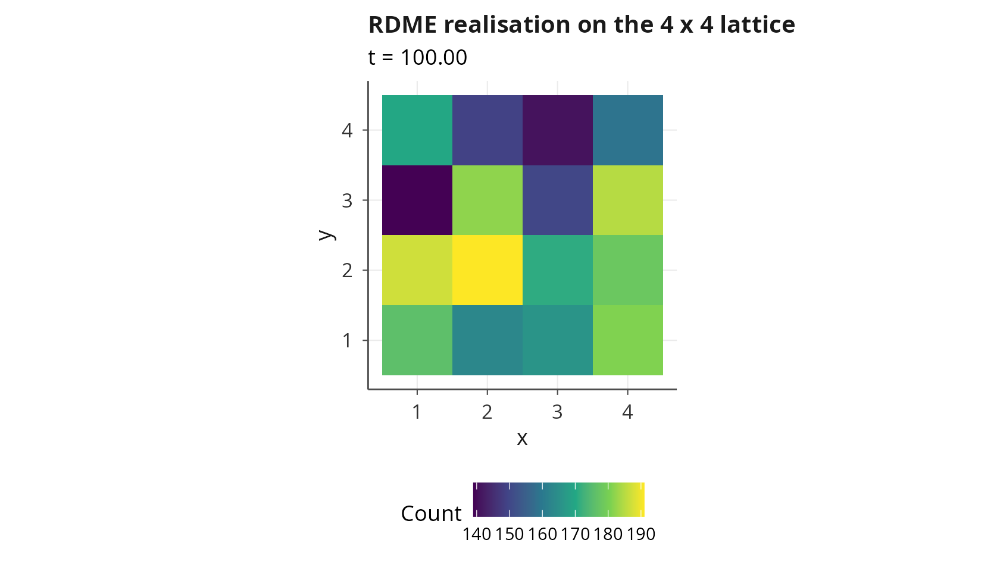
5.3 Ensemble fan chart
rdme_ens <- ensemble_sim(allee_rdme, n_replicates = 25, t_max = 100,
solver = solver_rdme(output_dt = 1.0),
parallel = FALSE, verbose = FALSE)
plot(rdme_ens, type = "fan",
title = "Ensemble fan chart of the lattice metapopulation (n = 25)")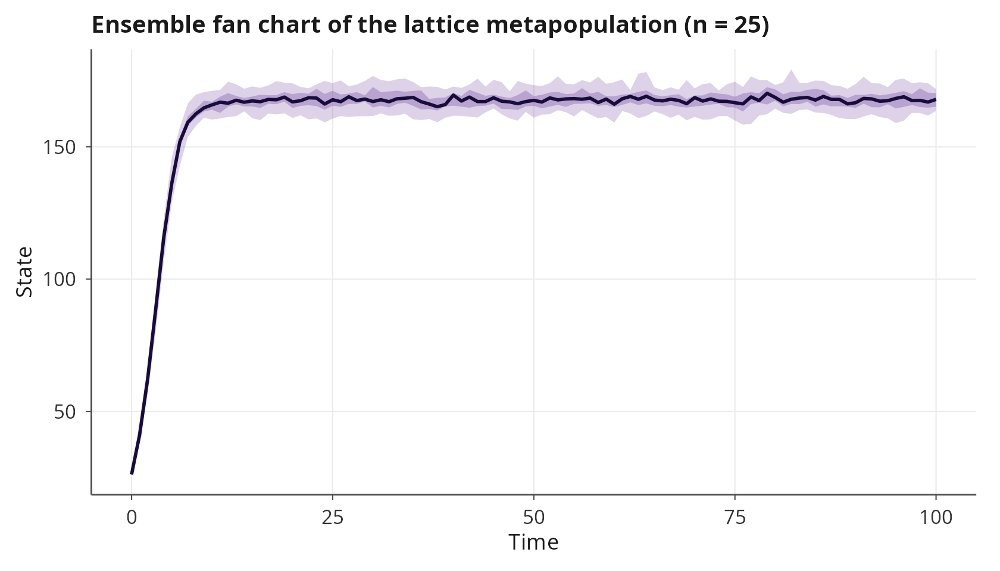
5.4 Quasi-stationary distribution on the well-mixed CTMC
Fleming-Viot particles [8] estimate the quasi-stationary distribution of a well-mixed absorbing chain by resampling particles that hit the absorbing set from the empirical distribution of survivors. Applied to the well-mixed Allee CTMC, the QSD peaks below the deterministic carrying capacity; the stochastic contraction is a finite-population correction to the mass-action approximation.
allee_single <- system_spec(
stoichiometry = list(birth = c(N = 1L),
death = c(N = -1L)),
propensities = list(birth ~ b0 * N^2 / (A + N),
death ~ d0 * N + beta * N^2),
state_names = "N",
parms = list(b0 = 1.0, d0 = 0.1, A = 10.0, beta = 0.005),
init = c(N = 30L)
)
qsd <- estimate_qsd(allee_single,
absorbing = ~ N == 0,
n_particles = 150L,
t_max = 120,
sample_interval = 1.0,
seed = 11, verbose = FALSE)
plot(qsd, title = "Quasi-stationary distribution of N (well-mixed Allee CTMC)")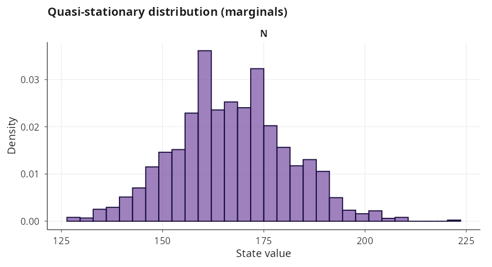
5.5 Extinction probability across the Allee threshold
As the Allee threshold \(A\) grows, the unstable threshold and the stable carrying capacity approach each other and annihilate at the fold; the deterministic ODE predicts collapse to \(N = 0\) for any \(A\) above the fold. The stochastic version softens this transition: for values of \(A\) below the deterministic fold, demographic noise already triggers extinction with non-trivial probability over a finite horizon. Sweeping \(A\) across the CTMC quantifies the stochastic shift of the effective extinction boundary.
A_grid <- seq(5, 35, length.out = 7)
p_ext <- vapply(A_grid, function(Aval) {
m <- allee_single
m$parms$A <- Aval
out <- estimate_extinction(m, target = ~ N == 0,
n_runs = 80L, t_max = 150,
seed = 29, verbose = FALSE)
as.numeric(out$probability)
}, numeric(1))
df_sweep <- data.frame(A = A_grid, p_ext = p_ext)
ggplot(df_sweep, aes(x = A, y = p_ext)) +
geom_line(colour = "#E66101", linewidth = 0.8) +
geom_point(colour = "#E66101", size = 2) +
labs(title = "Stochastic extinction probability across the Allee threshold A",
x = "Allee threshold A", y = "P( N = 0 by t = 150 )") +
theme_minimal()The quantitative takeaway is direct. Even for values of \(A\) well below the deterministic fold, the stochastic population goes extinct with non-trivial probability inside a finite horizon, because demographic noise transports the system across the unstable Allee threshold. The deterministic fold curve and the stochastic extinction-probability surface therefore encode different information, and janos makes both accessible through the same specification object.
6. Position of janos in the current landscape
The capability matrix below compares janos to packages and ecosystems
that target the same niche across R, Python, Julia, C++ and commercial
environments. The cell encoding uses four symbols to keep the table
within A4 width: F means first-class native support
shipping with the tool; P means partial support, either
restricted in scope or available only through an optional add-on;
C means that the capability is covered only when several
packages in the same ecosystem are coordinated by hand; -
means the capability is absent and the user would have to implement it
from scratch. Capability columns are grouped into core simulation (A to
B), stochastic and spatial extensions (C to G) and analysis layer (H to
J).
| Tool / ecosystem | A. ODE (stiff, adaptive) | B. SDE (multiplicative, correlated) | C. Exotic noise (Levy, fBm, 1/f) | D. CTMC / tau-leap / hybrid | E. RDME (grids + graphs) | F. PDE via method of lines | G. DDE / PDMP / jump-diffusion | H. Continuation + bifurcation | I. Lyapunov spectrum + constructive | J. FP / QSD / rare event / MLMC / adjoint |
|---|---|---|---|---|---|---|---|---|---|---|
| janos (R) | F | F | F | F | F | F | F | F | F | F |
| deSolve + sde + GillespieSSA2 + ReacTran (R) | F | P | - | P | - | P | P | - | - | - |
| pomp (R) | P | P | - | F | - | - | P | - | - | F |
| phaseR (R) | P | - | - | - | - | - | - | P | - | - |
| SciPy + Gillespy2 + py-pde (Python) | F | P | - | P | - | F | - | - | - | - |
| PyDSTool (Python) | F | - | - | - | - | - | - | F | P | - |
| Tellurium / libRoadRunner (Py/R) | F | P | - | F | - | - | - | - | - | - |
| SciML: DifferentialEquations.jl + BifurcationKit.jl + DynamicalSystems.jl + Catalyst.jl (Julia) | F | F | P | F | P | F | F | F | P | P |
| SUNDIALS + Boost.odeint (C++) | F | F | - | - | - | P | P | - | - | - |
| MATLAB ODE + SimBiology + MATCONT + dde23 | F | P | - | F | - | F | P | F | P | P |
| Mathematica NDSolve | F | P | - | - | - | F | P | P | - | - |
| XPPAUT + AUTO-07p | F | P | - | - | - | - | P | F | P | - |
The table does not claim feature parity for every cell; each
non-obvious assessment corresponds to a feature documented in the
current manual of the tool in question, and borderline cases are
downgraded rather than inflated. The honest summary is that no single R
or Python package covers the union of ODE with stiff solvers, SDE with
exotic noise processes, CTMC with adaptive tau-leap and hybrid SSA/CLE,
RDME on grids and on arbitrary graphs, deterministic PDE through method
of lines, DDE, PDMP, jump-diffusion, numerical continuation, Lyapunov
spectrum, constructive Lyapunov certificates, Fokker-Planck densities
and Kramers rates, quasi-stationary distributions, rare-event importance
sampling, multi-level Monte Carlo and adjoint sensitivity under a single
unified specification API. The Julia SciML stack matches janos on core
simulation and on bifurcation and chaos diagnostics, but its
exotic-noise coverage is partial, it does not ship an RDME primitive and
the constructive-Lyapunov layer with Goh, SOS, RBF, Foster, Krasovskii,
Massera and CPA builders is not part of the ecosystem. Commercial suites
(MATLAB with SimBiology, MATCONT and dde23; Mathematica
NDSolve) are broad but closed-source and
license-restricted; XPPAUT and AUTO-07p remain the reference for
equilibrium continuation and qualitative analysis but do not cover the
stochastic or spatial layers.
7. Where to go next
This vignette is the unifier; every subsystem it introduces is
developed in a dedicated tutorial. vignette("solvers")
itemises the complete solver catalogue with accuracy and stability
trade-offs. vignette("qualitative-analysis") develops the
phase-portrait machinery, equilibrium classification, manifold tracing
and nullclines. vignette("chaotic-systems") extends
continuation to strange attractors and covers the full chaos-diagnostics
suite. vignette("stochastic-simulation") covers CTMC
modelling, SSA variants, tau-leaping, hybrid SDE, quasi-stationary
distributions and multi-level Monte Carlo.
vignette("sde-noise") develops SDE solvers, correlated
noise, Levy alpha-stable, fractional Brownian motion and coloured noise.
vignette("spatial-dynamics") covers PDEs in one and two
dimensions and the full RDME layer on grids and graphs.
vignette("advanced-dynamics") covers DDEs, PDMPs, discrete
maps, continuation and adjoint sensitivity.
vignette("lyapunov_functions") is the reference for the
Lyapunov advisor and for each of the eight constructive algorithms.
vignette("ensemble-simulation") covers the parallel
ensemble dispatcher and the fan, spaghetti, terminal and extinction plot
types. vignette("API") provides a detailed cross-reference
of every exported function and the compilation pipeline.
Basin-of-attraction analysis with wadaR
For the specialised problem of detecting Wada basins of attraction
and resolving fractal basin boundaries in dissipative systems, the
companion package wadaR accepts a
system_spec directly through its
compiled_system() constructor. Internally, wadaR calls the
exported helper system_spec_rhs_cpp() to translate the
symbolic right-hand sides into C++ expressions and inlines them into its
parallel OpenMP basin-classification kernel; no rewriting of equations
into raw C++ is required from the user. The same
system_spec object thus drives both single-trajectory
simulation in janos and basin classification in wadaR.
duffing_model <- system_spec(
rhs = list(
x ~ y,
y ~ -delta * y - x * (x * x - 1) + F * sin(omega * t)
),
state_names = c("x", "y"),
parms = list(delta = 0.15, F = 0.20, omega = 1.0)
)
attractors <- list(
wadaR::attractor_point(c(-1.0, 0.0), 0.3, "left"),
wadaR::attractor_point(c( 1.0, 0.0), 0.3, "right"),
wadaR::attractor_point(c( 0.0, 0.0), 0.3, "origin")
)
system_for_basins <- tryCatch(
wadaR::compiled_system(
model = duffing_model,
attractors = attractors,
name = "Duffing oscillator (basin-ready)",
verbose = FALSE
),
error = function(e) {
message("wadaR::compiled_system() requires a wadaR build that ",
"recognises janos::system_spec; the installed wadaR raised: ",
conditionMessage(e))
NULL
})
if (!is.null(system_for_basins)) print(system_for_basins)References
[1] Selkov, E. E. (1968). Self-oscillations in glycolysis. A simple kinetic model. European Journal of Biochemistry, 4(1), 79-86. doi:10.1111/j.1432-1033.1968.tb00175.x
[2] Kramers, H. A. (1940). Brownian motion in a field of force and the diffusion model of chemical reactions. Physica, 7(4), 284-304. doi:10.1016/S0031-8914(40)90098-2
[3] Risken, H. (1989). The Fokker-Planck Equation: Methods of Solution and Applications. 2nd ed. Springer Series in Synergetics, vol. 18. Springer. ISBN 978-3-540-61530-9. doi:10.1007/978-3-642-61544-3
[4] Gurney, W. S. C., Blythe, S. P. and Nisbet, R. M. (1980). Nicholson’s blowflies revisited. Nature, 287(5777), 17-21. doi:10.1038/287017a0
[5] Newell, A. C. and Whitehead, J. A. (1969). Finite bandwidth, finite amplitude convection. Journal of Fluid Mechanics, 38(2), 279-303. doi:10.1017/S0022112069000176
[6] Segel, L. A. (1969). Distant side-walls cause slow amplitude modulation of cellular convection. Journal of Fluid Mechanics, 38(1), 203-224. doi:10.1017/S0022112069000127
[7] Courchamp, F., Berec, L. and Gascoigne, J. (2008). Allee Effects in Ecology and Conservation. Oxford University Press. ISBN 978-0-19-857030-1. doi:10.1093/acprof:oso/9780198570301.001.0001
[8] Burdzy, K., Holyst, R. and March, P. (2000). A Fleming-Viot particle representation of the Dirichlet Laplacian. Communications in Mathematical Physics, 214(3), 679-703. doi:10.1007/s002200000294